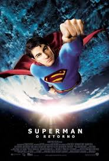

2006-2010
Filmes que marcaram a época :
- Superman - O Retorno, lançado no dia 14/07/2006, dirigido por Bryan Singer.
- Motoqueiro Fantasma, lançado no dia 02/02/2007, dirigido por Mark Steven Johnson.
- Alvin e os Esquilos, lançado no dia 04/01/2008, dirigido por Tim Hill.
- Bolt Supercão, lançado no dia 01/01/2009, dirigido por Byron Howard, Chris Williams
- Alvin e os Esquilos 2, lançado no dia 08/01/2010, dirigido por Betty Thomas.



Músicas de sucesso na época:
2006:
- Quando a chuva passar - Ivete Sangalo
- Ela só pensa em beijar - MC Leozinho
- Me namora - Edu Ribeiro & Cativeiro
- Desenho de Deus (Ao vivo) - Armandinho
- O sol - Jota Quest
- Ai, ai, ai... - Vanessa da Mata
- É isso aí - Ana Carolina & Seu Jorge
- Glamurosa - MC Marcinho
2007:
- Razões e emoções - NX Zero
- Boa sorte/Good Luck - Vanessa da Mata & Ben Harper
- Deixo (Ao vivo) - Ivete Sangalo
- Livre pra voar (Ao vivo) - Exaltasamba
- Natiruts Reggae Power (Ao vivo) - Natiruts
- Lua cheia/Fica doida - Papas da Língua
- Sem radar (Ao vivo) - Jeito Moleque
- Fada (Ao vivo) - Victor & Léo.
2008:
- Tem que ser você (Ao vivo) - Victor & Léo
- Exttravasa - Cláudia Leitte
- Mina do condomínio - Seu Jorge
- Cedo ou tarde - NX Zero
- Sem ar - D'Black
- Me abrace - Wanessa Camargo part. Grupo Camila
- Coração bandido - Leonardo
- Pode chorar (Ao vivo) - Alexandre Pires.
2009:
- Chora, me liga! (Ao vivo) - João Bosco & Vinícius
- Deus e eu no sertão - Victor & Léo
- Sutilmente - Skank
- Agenda - Ornella Di Sants part. Belo
- Cartas pra você - NX Zero
- Não tente me impedir (Ao vivo) - Bruno & Marrone
- Vem andar comigo - Jota Quest
- Versos simples (Ao vivo) - Chimarruts
2010:
- mo noite e dia (Ao vivo) - Jorge & Mateus
- Fugidinha (Ao vivo) - Michel Teló
- Madrid (Ao vivo) - Fernando & Sorocaba
- Você não sabe o que é amor (Ao vivo) - Luan Santana
- Tapa na cara - Zezé di Camargo & Luciano
- Tá se achando (Ao vivo) - Guilherme & Santiago
- Sem esse coração (Ao vivo) - João Bosco & Vinícius
- Famosa (Billionaire) - Cláudia Leitte Feat. Travie McCoy
- Ao vivo e em cores (Ao vivo) - Victor & Léo.
Os acontecimentos que marcaram os anos de 2006-2010 foram:
- Em 2006 o youtube revoluciona a TV.
- Em 2007 Cai avião da TAM em Congonhas.
- Em 2008 Obama eleito novo presidente dos EUA.
- Em 2009 Morre Michael Jackson
- Em 2010 Dilma é eleita presidente